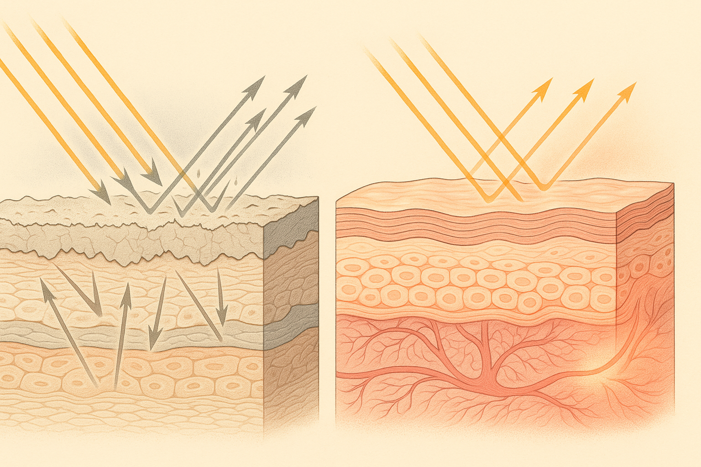
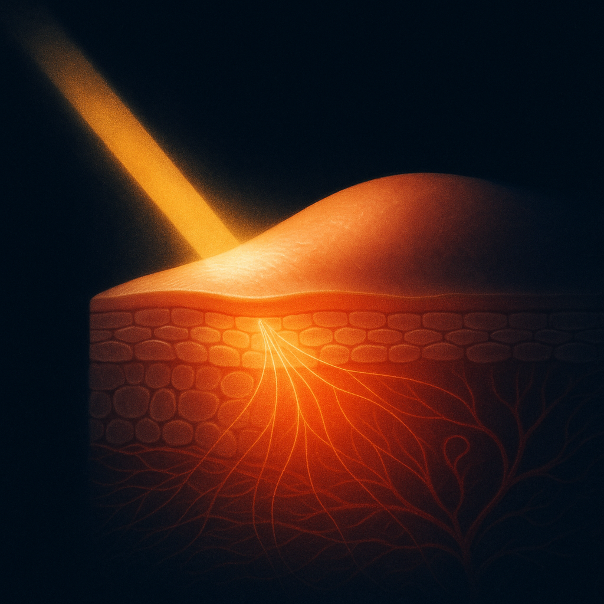
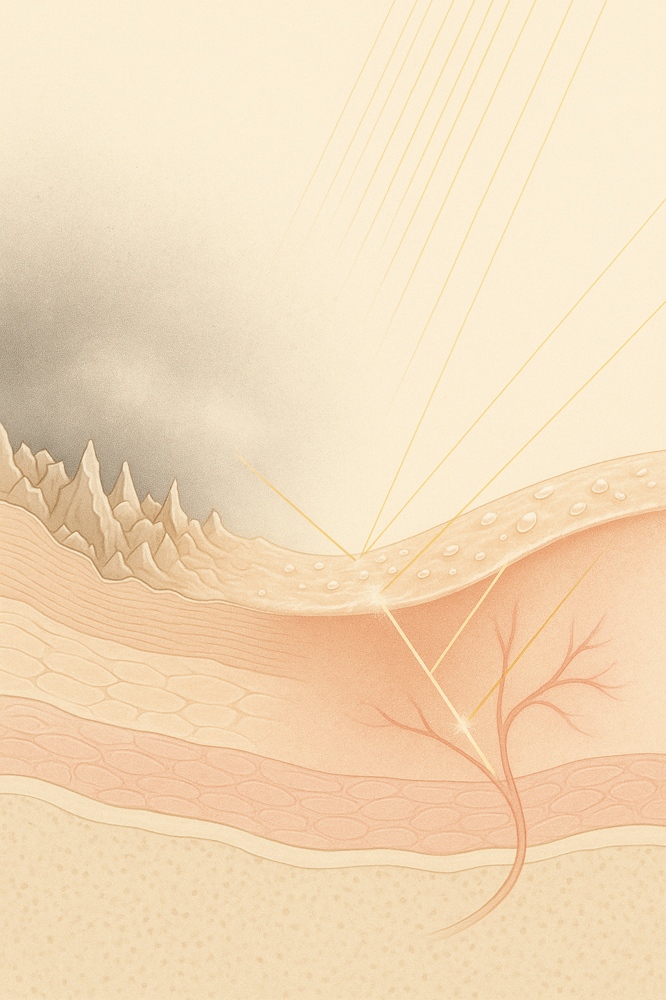

Review below. Reply approve to publish the Facebook post, or tell me edits.

The short version:
You know the look. You catch yourself in the mirror on a grey July morning and your skin reads flat. Not broken out, not obviously dry, just tired. Grey, somehow. It happens to almost everyone, and it happens more in winter. So why does skin look dull? It is one of the most searched skin complaints in Australia for a simple reason: "dull" is easy to see and hard to name.
Here is the useful bit. Dullness is not a mystery, and glow is not a product. Both are physics. Once you understand how skin returns light, the whole category (highlighters, glow drops, radiance serums) makes a lot more sense, and so does what actually shifts it.
First, a reassurance. Dull skin is not unwashed skin, and it is not a personal failing. It is an optical state. Your skin looks dull when the light hitting it comes back scattered and flat instead of even and warm. Winter makes it worse because indoor light is dimmer and cooler, cell turnover slows in the cold, and dehydrated air roughens the surface. Same face. Different physics.
So the question is not "what am I doing wrong", it is "what changed about how my skin is handling light". That question has a real answer.
Skin that reads dull is usually skin with a rough, dehydrated surface carrying a heavier-than-usual layer of dead cells. When light hits that kind of surface, it bounces off chaotically in every direction. The proper name is diffuse scattering. Stripped of the jargon, it means the light comes back as an even, directionless haze rather than a clean return.
Think of frosted glass versus clear glass. Both let light through. Frosted glass scatters it, so you get a flat, milky grey. Clear glass returns it cleanly, so you get depth and shine. A rough, dry skin surface behaves like the frosted pane. Nothing is wrong underneath. The surface is just scrambling the signal.
That flat, even scatter is what your eye reads as grey and matte. Dullness, in other words, is not a colour. It is a texture problem wearing a colour costume.
> Dullness is not a colour. It is a texture problem wearing a colour costume.
Radiance is the reverse story, and it has two parts.
The first is surface behaviour. A smoother, well-hydrated surface reflects light more evenly and coherently. Less chaos, more clean return. This is why skin often looks better straight after a shower or a good moisturiser: you have temporarily smoothed and plumped the outermost layer, so it stops behaving like frosted glass.
The second part is the interesting one. Skin is translucent. A portion of the light that hits it does not bounce off the surface at all. It dips a millimetre or so below, travels through the living layers, bounces around, and re-emerges slightly warmer in tone. The proper name is subsurface scattering, and it is the same effect that makes a hand glow red when you hold a torch behind it. When the tiny capillary loops in the upper dermis are well perfused (that is, carrying good blood flow), the light that re-emerges picks up a soft rose warmth. That is the "lit from within" look, and it is literal. The light genuinely went within.
An honest note here: the pink of real radiance comes from blood flow and healthy translucency, not from pigment and not from anything you can paint on. Which brings us to highlighter.
No knock on makeup. Illuminating primers and highlighters are clever optics: reflective particles that sit on the surface and bend light in flattering directions for the evening. They work, and there is nothing wrong with using them.
But it is worth being clear about what they are. They change how the product returns light, not how your skin returns light. Wash them off and the underlying optics are unchanged. Borrowed glow is useful. It is just not the same project as changing the surface and the circulation underneath, and the beauty industry is not always careful about that distinction.
If radiance is smooth surface plus healthy subsurface, the levers are unglamorous and slow. This is the honest version of how to get glowing skin naturally, and four levers matter most.
Hydration and barrier. A hydrated stratum corneum (the outermost layer) is a smoother one. Moisturiser, humidifier in winter, not stripping your skin with harsh cleansers. Boring. Effective.
Gentle turnover. Letting dead cells clear at a healthy rate keeps the frosted-glass layer thin. Gentle is the operative word; aggressive exfoliation roughens the surface and sets you back.
Microcirculation. The rosy half of the equation. Exercise helps. Sleep helps. This is also where red light honestly fits.
Consistency. All four levers reward routine and punish enthusiasm-in-bursts.
Notice what is not on the list: another layer. Real radiance is often subtraction. Less buildup, fewer products fighting each other, a better barrier. Doing less, better.
This is where a light therapy mask fits, and it fits under one lever, microcirculation, not all four. Red wavelengths around 630 nm are thought to support microcirculation and general cell activity when used consistently over weeks. The verbs matter: supports, helps, may. Think 4 to 8 weeks of daily use before judging, not days. That is one of the more realistic LED light therapy benefits, and it is why red light therapy at home rewards patience over hype.
And the plain limits: a light therapy mask will not resurface skin the way an acid does, it will not shift pigmentation, and it is a cosmetic device, not medicine.
Radiance is not a finish you apply. It is how well your skin returns light, and that comes down to smooth plus hydrated plus well perfused. Keep the frosted-versus-clear-glass frame; it will quietly reorganise how you read every "glow" claim you see from here on.
One thing worth being upfront about: Redermis is new. We do not yet have a wall of reviews, and we are not going to invent any. What we can offer is the physics, told straight, and the reassurance that comes with buying from an Australian brand: every purchase carries your full Australian Consumer Law remedy rights, no fine print needed.
So, before you buy the next radiance serum, worth asking: is it changing your skin, or just the light bouncing off it?
If you ever want a closer look at the mask and its full spec, it is here.

Your skin is not dull because you are missing a product. It is dull because of how it is returning light right now.
Here is the physics. A rough, dehydrated surface scatters light in every direction, so skin reads flat and grey. Think of matte paint: it swallows the light. A smoother, hydrated, well-perfused surface reflects light evenly, and lets some of it dip below and come back warm from the blood flow underneath. That is closer to gloss paint, with a "lit from within" depth to it.
Highlighter and illuminating primer are borrowed glow. They sit on top and bend light for the night; they do not change how your skin itself returns it.
What actually moves it is slow and unglamorous:
- Hydration and a healthy barrier
- Gentle turnover (not aggressive exfoliation)
- Microcirculation
- Consistency
Red light is thought to support microcirculation and cell activity over weeks, which is the one lever where our mask honestly fits. It will not resurface skin or shift pigment. It is a cosmetic device, not medicine.
A small note on us: Redermis is a new Australian brand, one face-and-neck light therapy mask, no wall of reviews yet and no invented ones. We would rather teach you the physics than hurry you.
If you want a closer look at the mask and the full spec, it is here: https://redermis.com.au/products/medical-grade-silicone-7-wevelenghts-photon-led-mask-face-and-neck-red-light-therapy-flexible-facial-mask-repair-skin-wireless-use
What is one "get glowy skin" tip you have quietly stopped believing? Tell us below.
## Hashtags
#skinscience #redlighttherapy #skinlongevity #glowingskin #dullskin

Dull skin is an optics problem, not a moral failing.
Glow is not something you buy in a bottle. It comes down to physics: how your skin returns light.
When skin is rough and dehydrated, it scatters light in every direction, and that flat scatter is what your eye reads as grey. Think frosted glass. When skin is smooth, hydrated and well-perfused, it reflects light evenly, and some of that light dips just below the surface and comes back warm from the blood flow underneath. That is the "lit from within" look. Clear glass.
Highlighter only sits on top of all this. Borrowed glow, mostly gone by morning.
Real radiance is slow, and honestly it is more about subtraction than adding another product. The levers that matter are hydration, a healthy barrier, gentle turnover, good circulation, and consistency.
Where our mask fits, honestly: red light is thought to support microcirculation and skin-cell activity over weeks. Not overnight, not a resurfacer, a cosmetic device rather than medicine.
Redermis is a new Australian brand with one face-and-neck light therapy mask. No wall of reviews yet, and none invented. We would rather explain the physics than hurry you.
Which of these are you already doing, and which one is missing? Full spec is in our bio if you want a closer look.
## Hashtags
#skincarescience #redlighttherapy #dullskin #glowingskin #australianskincare #lighttherapymask #skinbarrier
## Title
Why no highlighter fixes dull skin (it is a texture problem, not a colour one)
## Description
Dull skin is a physics problem, not a colour one. A rough, congested surface scatters light in every direction, so it reads flat and grey. Think frosted glass. A smooth, well-hydrated surface returns light cleanly and lets a little of it come back warm from the blood flow underneath, the clear-glass "lit from within" look. That is why no highlighter can fix what texture is doing underneath: makeup only borrows glow for the night. The real levers work below the surface and slowly: gentle turnover, hydration, and consistent habits. Red light therapy at home sits under one of those levers. A light therapy mask uses specific wavelengths (630 nm red, for example) that are thought to support the skin doing its own maintenance over weeks (it is a cosmetic device, not a cure, and it will not resurface skin or shift pigment). Slow and steady, but it is the kind of glow you do not wash off at night.
## Destination Link
https://redermis.com.au/products/medical-grade-silicone-7-wevelenghts-photon-led-mask-face-and-neck-red-light-therapy-flexible-facial-mask-repair-skin-wireless-use
## Hashtags
#redlighttherapy #lighttherapymask #dullskin #skincarescience #glowingskin
## Image
This pin reuses the Instagram image (instagram.png). No separate Pinterest image is generated.